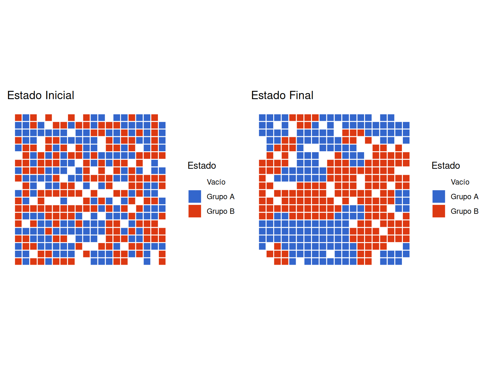
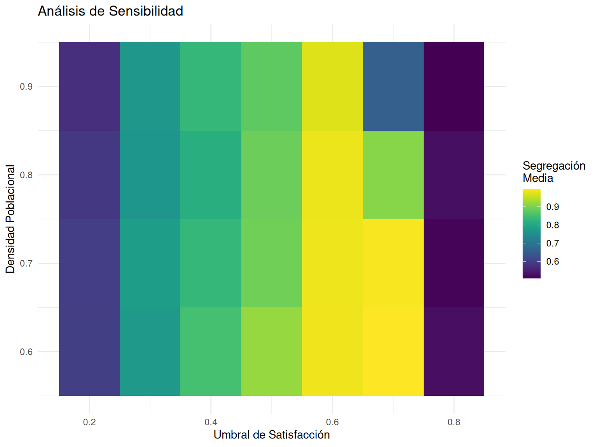

# Manipulación de datos y visualización
library(tidyverse)
library(gganimate)
library(gifski)
library(ragg)
library(gridExtra)
library(viridis)
# Configuración global de gráficos
theme_set(theme_minimal())Las ciudades, los barrios y los países suelen estar segregados. Esto significa que las personas de diferentes razas o etnias tienden a estar agrupadas geoespacialmente. Por ejemplo, el siguiente mapa muestra los patrones de segregación para la ciudad de NY en el año 2020.

1 Configuración Inicial
1.1 Carga de Librerías
2 Funciones Base del Modelo
2.1 Funciones Auxiliares
# Función para verificar posición válida
is_valid_position <- function(row, col, n_rows, n_cols) {
return(row >= 1 && row <= n_rows && col >= 1 && col <= n_cols)
}
# Función para obtener vecinos
get_neighbors <- function(grid, row, col) {
n_rows <- nrow(grid)
n_cols <- ncol(grid)
directions <- expand.grid(
row = c(-1, 0, 1),
col = c(-1, 0, 1)
)
directions <- directions[!(directions$row == 0 & directions$col == 0),]
neighbors <- lapply(1:nrow(directions), function(i) {
new_row <- row + directions$row[i]
new_col <- col + directions$col[i]
if(is_valid_position(new_row, new_col, n_rows, n_cols)) {
return(grid[new_row, new_col])
} else {
return(NA)
}
})
return(unlist(neighbors[!is.na(neighbors)]))
}
# Función para crear grilla inicial
create_schelling_grid <- function(n_rows = 20, n_cols = 20,
p_empty = 0.15, p_ratio = 0.5) {
total_cells <- n_rows * n_cols
n_empty <- floor(total_cells * p_empty)
n_occupied <- total_cells - n_empty
n_type1 <- floor(n_occupied * p_ratio)
n_type2 <- n_occupied - n_type1
grid_vector <- c(rep(1, n_type1),
rep(2, n_type2),
rep(0, n_empty))
grid_vector <- sample(grid_vector)
matrix(grid_vector, nrow = n_rows, ncol = n_cols)
}2.2 Funciones Principales
Code
# Función para calcular satisfacción individual
calculate_satisfaction <- function(grid, row, col, threshold = 0.375) {
if (grid[row, col] == 0) return(TRUE)
agent_type <- grid[row, col]
neighbors <- get_neighbors(grid, row, col)
total_neighbors <- sum(neighbors != 0)
if(total_neighbors == 0) return(TRUE)
same_type_neighbors <- sum(neighbors == agent_type)
ratio <- same_type_neighbors / total_neighbors
return(ratio >= threshold)
}
# Función para paso de simulación
schelling_step <- function(grid, threshold = 0.375) {
n_rows <- nrow(grid)
n_cols <- ncol(grid)
new_grid <- grid
agent_positions <- which(grid != 0, arr.ind = TRUE)
empty_positions <- which(grid == 0, arr.ind = TRUE)
if(nrow(empty_positions) == 0) return(grid)
unsatisfied <- apply(agent_positions, 1, function(pos) {
!calculate_satisfaction(grid, pos[1], pos[2], threshold)
})
unsatisfied_positions <- agent_positions[unsatisfied,, drop=FALSE]
if(nrow(unsatisfied_positions) == 0) return(grid)
for(i in 1:nrow(unsatisfied_positions)) {
if(nrow(empty_positions) == 0) break
empty_idx <- sample(nrow(empty_positions), 1)
agent_pos <- unsatisfied_positions[i,]
empty_pos <- empty_positions[empty_idx,]
new_grid[empty_pos[1], empty_pos[2]] <- grid[agent_pos[1], agent_pos[2]]
new_grid[agent_pos[1], agent_pos[2]] <- 0
empty_positions <- empty_positions[-empty_idx,, drop=FALSE]
}
return(new_grid)
}
# Función para métricas
calculate_metrics <- function(grid) {
n_rows <- nrow(grid)
n_cols <- ncol(grid)
satisfied_count <- 0
total_agents <- 0
for(i in 1:n_rows) {
for(j in 1:n_cols) {
if(grid[i,j] != 0) {
total_agents <- total_agents + 1
if(calculate_satisfaction(grid, i, j)) {
satisfied_count <- satisfied_count + 1
}
}
}
}
satisfaction_rate <- satisfied_count / total_agents
segregation_index <- calculate_segregation_index(grid)
return(list(
satisfaction_rate = satisfaction_rate,
segregation_index = segregation_index
))
}
# Función auxiliar para índice de segregación
calculate_segregation_index <- function(grid) {
n_rows <- nrow(grid)
n_cols <- ncol(grid)
segregation_sum <- 0
total_pairs <- 0
for(i in 1:n_rows) {
for(j in 1:n_cols) {
if(grid[i,j] != 0) {
neighbors <- get_neighbors(grid, i, j)
similar_neighbors <- sum(neighbors == grid[i,j])
total_neighbors <- sum(neighbors != 0)
if(total_neighbors > 0) {
segregation_sum <- segregation_sum + similar_neighbors/total_neighbors
total_pairs <- total_pairs + 1
}
}
}
}
return(segregation_sum / total_pairs)
}
# Función de simulación completa
run_schelling_simulation <- function(n_rows = 20, n_cols = 20,
p_empty = 0.15, p_ratio = 0.5,
threshold = 0.375, max_steps = 50,
record_metrics = TRUE) {
grid <- create_schelling_grid(n_rows, n_cols, p_empty, p_ratio)
grid_history <- list(grid)
if(record_metrics) {
metrics <- data.frame(
step = 0,
satisfaction_rate = NA,
segregation_index = NA,
moves = 0
)
metrics[1, 2:3] <- calculate_metrics(grid)
}
for(i in 1:max_steps) {
new_grid <- schelling_step(grid, threshold)
grid_history[[i + 1]] <- new_grid
if(record_metrics) {
current_metrics <- calculate_metrics(new_grid)
moves <- sum(new_grid != grid)
metrics <- rbind(metrics,
data.frame(step = i,
satisfaction_rate = current_metrics$satisfaction_rate,
segregation_index = current_metrics$segregation_index,
moves = moves))
}
if(identical(grid, new_grid)) {
cat("Equilibrio alcanzado en paso", i, "\n")
break
}
grid <- new_grid
}
if(record_metrics) {
return(list(
grid_history = grid_history,
metrics = metrics
))
} else {
return(grid_history)
}
}2.3 Funciones de Visualización
Code
# Función para visualizar estado de la grilla
plot_grid_state <- function(grid, title = NULL) {
df <- expand.grid(x = 1:ncol(grid), y = 1:nrow(grid))
df$value <- as.vector(grid)
ggplot(df, aes(x = x, y = y, fill = factor(value))) +
geom_tile(color = "white", size = 0.5) +
scale_fill_manual(
values = c("white", "#3366CC", "#DC3912"),
labels = c("Vacío", "Grupo A", "Grupo B"),
name = "Estado"
) +
coord_equal() +
theme_minimal() +
theme(
axis.text = element_blank(),
axis.title = element_blank(),
panel.grid = element_blank()
) +
ggtitle(title)
}
# Función para crear animación
create_simulation_animation <- function(grid_history) {
df <- data.frame()
for(i in seq_along(grid_history)) {
temp_df <- expand.grid(
x = 1:ncol(grid_history[[1]]),
y = 1:nrow(grid_history[[1]])
)
temp_df$value <- as.vector(grid_history[[i]])
temp_df$step <- i
df <- rbind(df, temp_df)
}
p <- ggplot(df, aes(x = x, y = y, fill = factor(value))) +
geom_tile() +
scale_fill_manual(
values = c("white", "#3366CC", "#DC3912"),
labels = c("Vacío", "Grupo A", "Grupo B"),
name = "Estado"
) +
coord_equal() +
theme_minimal() +
theme(
axis.text = element_blank(),
axis.title = element_blank(),
panel.grid = element_blank()
) +
labs(title = 'Paso: {frame_time}') +
transition_time(step)
animate(p, nframes = length(grid_history), fps = 2)
}
# Función para visualizar métricas
plot_metrics <- function(metrics) {
metrics_long <- metrics %>%
pivot_longer(
cols = c(satisfaction_rate, segregation_index),
names_to = "metric",
values_to = "value"
)
ggplot(metrics_long, aes(x = step, y = value, color = metric)) +
geom_line(size = 1) +
geom_point(size = 2) +
scale_color_manual(
values = c("#3366CC", "#DC3912"),
labels = c("Tasa de Satisfacción", "Índice de Segregación"),
name = "Métrica"
) +
theme_minimal() +
labs(
title = "Evolución de Métricas",
x = "Paso",
y = "Valor"
)
}3 Ejecución de la Simulación
Code
# Configurar parámetros
params <- list(
n_rows = 20,
n_cols = 20,
p_empty = 0.15,
p_ratio = 0.5,
threshold = 0.4,
max_steps = 50
)
# Ejecutar simulación
set.seed(123)
results <- run_schelling_simulation(
n_rows = params$n_rows,
n_cols = params$n_cols,
p_empty = params$p_empty,
p_ratio = params$p_ratio,
threshold = params$threshold,
max_steps = params$max_steps,
record_metrics = TRUE
)Equilibrio alcanzado en paso 13 Code
# Visualizar estados inicial y final
grid_plots <- gridExtra::grid.arrange(
plot_grid_state(results$grid_history[[1]], "Estado Inicial"),
plot_grid_state(results$grid_history[[length(results$grid_history)]],
"Estado Final"),
ncol = 2
)
Code
# Visualizar evolución de métricas
metrics_plot <- plot_metrics(results$metrics)
# Crear y guardar animación
animation <- create_simulation_animation(results$grid_history)
anim_save("segregacion_schelling.gif", animation)4 Análisis de Sensibilidad
Code
# Función para análisis de sensibilidad
run_sensitivity_analysis <- function(thresholds = seq(0.2, 0.8, by = 0.1),
densities = seq(0.6, 0.9, by = 0.1),
n_reps = 5) {
results <- expand.grid(
threshold = thresholds,
density = densities,
rep = 1:n_reps
)
results$segregation <- NA
results$satisfaction <- NA
for(i in 1:nrow(results)) {
sim <- run_schelling_simulation(
p_empty = 1 - results$density[i],
threshold = results$threshold[i],
record_metrics = TRUE
)
final_metrics <- tail(sim$metrics, 1)
results$segregation[i] <- final_metrics$segregation_index
results$satisfaction[i] <- final_metrics$satisfaction_rate
}
return(results)
}
# Ejecutar análisis de sensibilidad
sensitivity_results <- run_sensitivity_analysis()Equilibrio alcanzado en paso 5
Equilibrio alcanzado en paso 9
Equilibrio alcanzado en paso 13
Equilibrio alcanzado en paso 7
Equilibrio alcanzado en paso 19
Equilibrio alcanzado en paso 37
Equilibrio alcanzado en paso 5
Equilibrio alcanzado en paso 9
Equilibrio alcanzado en paso 9
Equilibrio alcanzado en paso 12
Equilibrio alcanzado en paso 27
Equilibrio alcanzado en paso 34
Equilibrio alcanzado en paso 2
Equilibrio alcanzado en paso 9
Equilibrio alcanzado en paso 9
Equilibrio alcanzado en paso 14
Equilibrio alcanzado en paso 40
Equilibrio alcanzado en paso 5
Equilibrio alcanzado en paso 12
Equilibrio alcanzado en paso 17
Equilibrio alcanzado en paso 17
Equilibrio alcanzado en paso 6
Equilibrio alcanzado en paso 7
Equilibrio alcanzado en paso 8
Equilibrio alcanzado en paso 13
Equilibrio alcanzado en paso 15
Equilibrio alcanzado en paso 30
Equilibrio alcanzado en paso 5
Equilibrio alcanzado en paso 7
Equilibrio alcanzado en paso 11
Equilibrio alcanzado en paso 9
Equilibrio alcanzado en paso 25
Equilibrio alcanzado en paso 6
Equilibrio alcanzado en paso 11
Equilibrio alcanzado en paso 10
Equilibrio alcanzado en paso 16
Equilibrio alcanzado en paso 44
Equilibrio alcanzado en paso 4
Equilibrio alcanzado en paso 14
Equilibrio alcanzado en paso 17
Equilibrio alcanzado en paso 13
Equilibrio alcanzado en paso 3
Equilibrio alcanzado en paso 10
Equilibrio alcanzado en paso 8
Equilibrio alcanzado en paso 12
Equilibrio alcanzado en paso 17
Equilibrio alcanzado en paso 31
Equilibrio alcanzado en paso 3
Equilibrio alcanzado en paso 14
Equilibrio alcanzado en paso 7
Equilibrio alcanzado en paso 15
Equilibrio alcanzado en paso 25
Equilibrio alcanzado en paso 38
Equilibrio alcanzado en paso 5
Equilibrio alcanzado en paso 10
Equilibrio alcanzado en paso 14
Equilibrio alcanzado en paso 15
Equilibrio alcanzado en paso 28
Equilibrio alcanzado en paso 4
Equilibrio alcanzado en paso 11
Equilibrio alcanzado en paso 12
Equilibrio alcanzado en paso 18
Equilibrio alcanzado en paso 4
Equilibrio alcanzado en paso 7
Equilibrio alcanzado en paso 10
Equilibrio alcanzado en paso 9
Equilibrio alcanzado en paso 14
Equilibrio alcanzado en paso 31
Equilibrio alcanzado en paso 6
Equilibrio alcanzado en paso 9
Equilibrio alcanzado en paso 10
Equilibrio alcanzado en paso 10
Equilibrio alcanzado en paso 19
Equilibrio alcanzado en paso 41
Equilibrio alcanzado en paso 4
Equilibrio alcanzado en paso 10
Equilibrio alcanzado en paso 9
Equilibrio alcanzado en paso 16
Equilibrio alcanzado en paso 36
Equilibrio alcanzado en paso 5
Equilibrio alcanzado en paso 12
Equilibrio alcanzado en paso 13
Equilibrio alcanzado en paso 20
Equilibrio alcanzado en paso 4
Equilibrio alcanzado en paso 6
Equilibrio alcanzado en paso 9
Equilibrio alcanzado en paso 9
Equilibrio alcanzado en paso 16
Equilibrio alcanzado en paso 41
Equilibrio alcanzado en paso 4
Equilibrio alcanzado en paso 13
Equilibrio alcanzado en paso 9
Equilibrio alcanzado en paso 10
Equilibrio alcanzado en paso 23
Equilibrio alcanzado en paso 38
Equilibrio alcanzado en paso 6
Equilibrio alcanzado en paso 8
Equilibrio alcanzado en paso 11
Equilibrio alcanzado en paso 12
Equilibrio alcanzado en paso 28
Equilibrio alcanzado en paso 6
Equilibrio alcanzado en paso 12
Equilibrio alcanzado en paso 12
Equilibrio alcanzado en paso 15 Code
# Visualizar resultados
plot_sensitivity <- function(results) {
summary_stats <- results %>%
group_by(threshold, density) %>%
summarise(
mean_seg = mean(segregation),
sd_seg = sd(segregation),
.groups = 'drop'
)
ggplot(summary_stats, aes(x = threshold, y = density, fill = mean_seg)) +
geom_tile() +
scale_fill_viridis() +
theme_minimal() +
labs(
title = "Análisis de Sensibilidad",
x = "Umbral de Satisfacción",
y = "Densidad Poblacional",
fill = "Segregación\nMedia"
)
}
sensitivity_plot <- plot_sensitivity(sensitivity_results)
sensitivity_plot